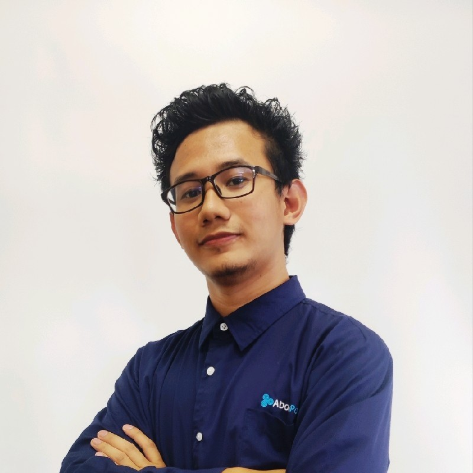

Lloyd Andreus Largo, RMeE
Summary
I am a highly motivated and results-oriented registered engineer with a
passion for web development. I am currently seeking a challenging
entry-level web development position where I can utilize my strong
analytical and problem-solving skills to develop and maintain high-quality
websites. I worked as an associate software engineer at Accenture, I
gained valuable experience in software development methodologies,
including Agile and Waterfall. In addition to my technical skills, I am
also a quick learner and a team player. I am confident that I can make a
significant contribution to your company.
Education
| School: University of San Jose Recoletos |
| Degree: BS Mechanical Engineer |
| Year Graduated: 2015 |
Work Experience
- Accenture Inc. (Oct. 2021 - Jan. 2023)
- Therma Visayas, Inc.(Mar. 2023 - Present)
- Field Engineer
-
Responsible for on-site inspection, local operation and monitoring
of Boiler and Turbine/Generator Equipment.
-
Responsible for monitoring of Boiler, Balance of Plant,
Turbine/Generator, AC-Driven Gen-set and related fire-fighting
equipment.
-
Regulates and adjusts auxiliary equipment with local controls to
achieve stable operations.
-
Test-runs emergency generators and all stand-by equipment and
records in log sheets in accordance with standard operating
procedures.
-
Complies with occupational safety and health, environmental rules
and regulations to prevent accidents and adverse effects on the
environment.
-
Performs other related duties and responsibilities that may be
assigned by the shift supervisor.
-
Site monitoring and fill up log sheets at scheduled interval each
shift covering major equipment, auxiliaries and monitoring gauges &
instruments outside the control room.
-
Conduct initial assessment and troubleshooting of malfunctioned
equipment during operation
Skills: SCADA · Steam Turbines · Boilers · Maintenance and Repair ·
Distributed Control System (DCS) · Pump Repair · Compressor ·
Powerplant Operation and Maintenance
- Cadet Engineer
-
Developed a deep understanding of power plant systems, P&IDs and
their functionalities.
-
Demonstrated strict adherence to safety protocols and procedures to
ensure a secure working environment.
-
Created weekly reports and documentation in power plant operations.
-
Actively engaged in training programs to continuously enhance
technical knowledge and skills relevant to power plant operations
and engineering principles.
-
Administered support in the daily operations of the power plant,
including equipment monitoring and control, and assistance during
plant start-ups and shutdowns.
-
Assisted in various maintenance activities, including routine
inspections, equipment testing, and troubleshooting.
-
Working knowledge in water treatment process such as Desalination
System (SWRO & BWRO) , Electro chlorination system, Wastewater
Treatment System, Sewage Treatment System, and Demineralized Water
Treatment System (Electrodeionization).
Skills: Engineering Training · Root Cause Analysis · Steam Turbines ·
Boilers · Operational Requirements · Steam · Compressor · Control
Systems · Piping and Instrumentation Drawing (P&ID) · Diesel Fuel ·
Turbines · Computer Literacy · Interpersonal Skills · Mathematics ·
Routine Maintenance · English · Troubleshooting · Communication ·
Powerplant Operation and Maintenance · Problem Solving · Teamwork
Certifications
- Certified: Microsoft Azure Data Fundamentals
- Licensed Mechanical Engineer - PRC
-
International Certification Level 1: CAD Operator AIDE - Royal
Institution Singapore
-
National Certificate II Technical Drafting - Technical Education and
Skills Development Authority (TESDA)
Others